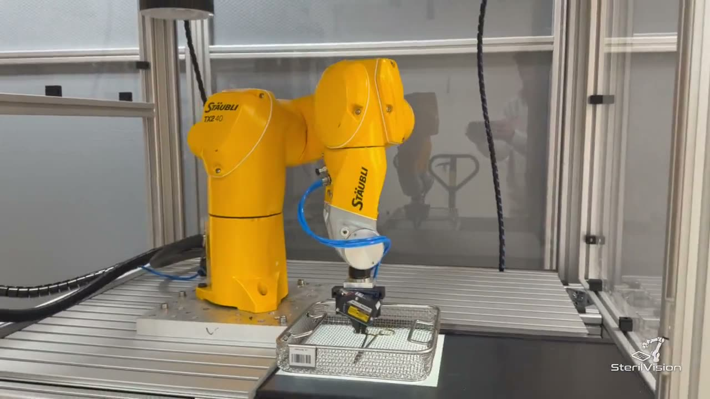
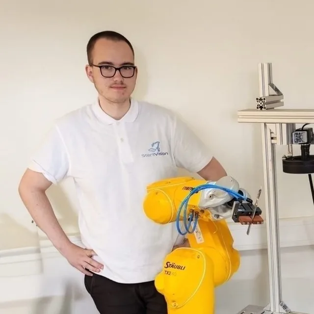
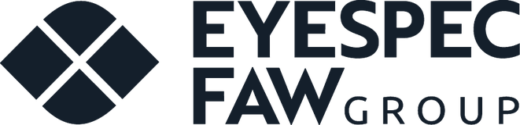

„Wir freuen uns, dass wir dieses Projekt unterstützen können.“
Sebastian KimstädtUnternehmenskommunikation, Westküstenklinikum Heide

KI-gestützte Sichtprüfung für die AEMP
Eine Prüfzelle aus Roboter, Kamera und KI sucht nach der Aufbereitung nach Blut, Proteinresten und Schäden. Die Freigabe bleibt bei Ihrer Fachkraft.
Forschungsprototyp aus einem Schülerforschungsprojekt in Dithmarschen. Kein Medizinprodukt.

Sonderpreis „No risk, no fun!“ beim Bundeswettbewerb Künstliche Intelligenz 2026. Berichte im NDR und im Mitteldeutschen Rundfunk (MDR).
Zur PresseNach Reinigung und Desinfektion wird jedes Instrument auf Sauberkeit und Unversehrtheit geprüft, bevor es verpackt und sterilisiert wird. Genau dort unterstützt die Prüfzelle.
Nach der Empfehlung von KRINKO und BfArM (2012) wird die Sauberkeit jedes Medizinprodukts per Sichtkontrolle geprüft, bei Bedarf mit der Lupenlampe. SterilVision soll diese Kontrolle unterstützen, nicht ersetzen.
Ein Roboterarm nimmt das Instrument einzeln aus dem Siebkorb.
Unter dem Kameraring entstehen Aufnahmen von allen Seiten. Die KI markiert mögliche Rückstände und Schäden.
Die Fachkraft sieht die markierten Stellen und entscheidet über die Freigabe.
Warum die Sichtprüfung an ihre Grenzen kommt, wie die Prüfzelle arbeitet und wer dahinter steht.
Entwickelt mit Einblick in die Aufbereitung des Westküstenklinikums Heide und mit Rückmeldung aus dem Universitätsklinikum Schleswig-Holstein.
„Wir freuen uns, dass wir dieses Projekt unterstützen können.“
Sebastian KimstädtUnternehmenskommunikation, Westküstenklinikum Heide
„Idee vielversprechend, Umsetzung beeindruckend.“
Dr. Gennadii IvanovOberarzt, Universitätsklinikum Schleswig-Holstein, Kiel

Die Aussagen stammen aus Videobotschaften an das Team. Unterstützung ist keine Validierung.
Forschungsprototyp. SterilVision ist kein Medizinprodukt, trägt keine CE-Kennzeichnung und wird nicht verkauft. Die Freigabe trifft immer eine Fachkraft.
Eingetragenes Gebrauchsmuster DE 20 2026 001 663, nicht auf Neuheit geprüft.
Zwei Entwickler aus Schleswig-Holstein. Die Prüfzelle steht bei der EyeSpec FAW Group in Hemmingstedt.

Albert HeruthGründer · KI und Anlage

Jakob RudolphMitgründer · Software

Auf der BühneVortrag bei Boyens Medien und FH Westküste
Westküstenklinikum HeideEinblick in die Aufbereitung
EyeSpec FAW GroupHier steht die PrüfzelleWir suchen Fachleute aus der Aufbereitung, die den Prototyp kritisch mit uns ansehen. Jede Rückmeldung aus der Praxis bringt das Projekt weiter.